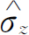

在第13章中，我们已经求出了关于一个电子或某些其他“粒子”，譬如一个原子的激发，穿过晶格传播的理论。上一章，我们把这个理论应用于半导体。但是每当我们讨论有许多电子存在的情形时，我们总是忽略它们之间的相互作用，当然这样做只是一种近似。在本章里我们将进一步讨论电子间的相互作用可以忽略这一概念。我们还将趁此机会向读者进一步介绍粒子传播理论的某些应用。既然我们一般仍旧忽略粒子间的相互作用，所以在本章中除了一些新的应用以外，实际上没有什么新的内容。我们首先要考虑的例子是，当存在着一个以上的“粒子”时，仍能相当精确地写出其正确方程的情形。虽然我们不去仔细分析这个问题，但是通过这些例子我们能看出这种忽略相互作用的近似方法是如何做出的。
作为第一个例子我们考虑铁磁晶体中的自旋波。在第2卷第36章中我们讨论过铁磁性理论。在绝对零度时所有铁磁晶体内对磁性有贡献的电子自旋都是平行排列的。这些自旋之间存在着相互作用能，当所有自旋都向下时，这一相互作用能最低。但是当温度不为零时，其中一部分自旋就有机会转向上。在第2卷第36章中我们近似计算了这一概率。现在我们将叙述其量子力学理论，这样你可以看出，如果要更严格地求解这个问题，你应该做些什么。（这里我们仍旧要作一些理想化，假设这些电子被限定在各自的原子中，而且只有相邻的自旋之间才有相互作用。）
我们考虑这样一种模型，该模型中每个原子的电子除一个以外其余都是成对的，因此所有的磁效应都来自每个原子中的一个自旋为1/2的电子。我们进一步设想这些电子被定域在晶格的原子座上，这个模型大致对应于金属镍。
我们再假定任何两个相邻的自旋电子间有相互作用存在，这个相互作用对整个体系的能量给出了这样一项
式中σ 表示电子的自旋，而求和遍及所有相邻的电子对。当我们考虑氢原子中由于电子和质子磁矩的相互作用而引起的超精细分裂时，就曾经讨论过这种类型的相互作用能。那时我们把它表示为A σ e •σ p 。现在，对于给定的一对电子，譬如说位于原子4和原子5的一对电子，其哈密顿为－K σ 4 •σ 5 。对每一对这样的电子都有这样的一项，而哈密顿（正如对经典能量所预期的）就是各对相互作用项之和。由于能量含有－K 的因子，所以正K 将相当于铁磁性，也就是说，当相邻自旋平行时总能量最低。在实际晶体中，可能还有次 近邻的相互作用项等等，但在现阶段我们没有必要考虑这种复杂的情形。
有了式（15.1）的哈密顿我们就有了——在我们的近似条件下——对铁磁体的完整描述，并且应可由之导出磁化的性质，我们也应能计算由于磁化的热力学性质。如果我们能够求出全部能级，则在温度T 时晶体的各种性质可以由下述统计力学原理求得，即系统处在给定能量为E 的状态的概率与e－E/kT 成正比。这个问题至今尚未被完全解出。
我们举一个所有原子都排成一条直线即一维晶格的简单例子来说明一些问题。你们很容易将这些概念推广到三维的情形。在每一个原子的位置上都有一个电子，每个电子都有两个可能的状态，不是自旋朝上就是自旋朝下，整个系统可通过说明所有自旋是如何排列的来描述。我们取体系的哈密顿作为相互作用的能量算符。将式（15.1）中的自旋矢量解释为σ 算符（或σ 矩阵），对于线性晶格我们可写出：
为方便起见，在上式中我们将常数写成A /2。（这样一来，以后的一些式子将和第13章的式子完全相同。）
现在我们要问，什么是这个体系的最低能量状态呢？体系的最低能量状态是所有自旋都平行的状态，譬如说所有自旋都向上 (1) 的态。我们可以把这个态写成｜…＋＋＋＋…〉，或｜gnd〉，就是“基态”或最低能量态。我们不难算出这个态的能量。一种办法是用 和 表示出所有σ 矢量，再仔细算出哈密顿的每一项在基态时的值，然后把结果相加。其实我们也可使用一个好而简捷的方法。在§12-2中我们已经知道， 可以用泡利自旋交换算符来表示，如
式中算符 的作用是交换第i 个电子与第j 个电子的自旋。把这个表示式代入式（15.2），哈密顿就成为：
现在要计算不同态的情形就容易了。例如，若i 和j 这两个电子的自旋同时向上，则交换自旋并不会引起任何变化，那么 作用于该态上又回到同一态，这与乘以＋1等价。因此表 正好等于1/2。（从现在开始我们省去 的上标。）
对于所有自旋都向上的基态；如果你们交换一对特定的自旋，你们仍旧回到原来的态。基态是一个定态。如果把哈密顿作用在这个态上，得到的又是这个态再乘上一个求和项，每一对自旋态提供－A /2。这就是说，在体系的基态能量中每个原子提供－A /2。
下面我们考虑某些激发态的能量。相对于基态来测量能量是很方便的，这就是说选择基态作为我们的能量零点。为了做到这一点，我们可以对哈密顿中的每一项加上能量A /2。这样正好把式（15.4）中的“1/2”变成“1”，因此新的哈密顿为
使用这个哈密顿，体系最低态的能量为零，（对于基态来说）自旋交换算符相当于乘以1，正好把每一项中的“1”消去。
为了描述基态之外的其他态，我们需要一组适当的基础态。一种较方便的处理方法是这样的，按照一个电子自旋向下，或两个电子自旋向下……等等对态进行分组。当然，一个电子自旋向下的态有很多，这个向下自旋可能位于原子“4”，或原子“5”，或原子“6”……等等。事实上我们可以选这样的态作为我们基础态，我们可以把它们写成：｜4〉，｜5〉，｜6〉……等。但是为了以后方便，我们也可用其坐标x 来标记这个具有自旋向下电子的“特别的原子”。也就是说，我们把态｜x 5 〉定义为：除了位于x 5 处的原子的电子自旋向下外，所有其他电子的自旋都向上（参看图15-1）。一般说来，｜x n 〉是有一个向下自旋的态，该向下自旋位于第n 个原子的坐标x n 处。
图15-1 一线性排列的自旋体系的基础态｜x 5 〉。其中除位于x 5 的一个自旋向下外，其余的自旋都向上
（15.5）式的哈密顿对态｜x 5 〉的作用结果是什么呢？譬如说哈密顿算符中－A （ －1）这一项，其中算符 是交换7、8两个相邻原子的自旋，而在态｜x 5 〉中这两个原子的自旋都是向上的，所以它的作用并没有改变什么，P 7，8 只相当于乘以1：
于是，哈密顿中除了包含原子5的那些项以外，其余所有的项作用于｜x 5 〉后都为0。算符 对态｜x 5 〉的作用使原子4的自旋（向上）和原子5的自旋（向下）作了交换，结果得到除了原子4的自旋向下外，其余所有原子的自旋都向上的态，即
因此，哈密顿中只留下 和 两项，它们对｜x 5 〉的作用，分别得到－A ｜x 4 〉＋A ｜x 5 〉和－A ｜x 6 〉＋A ｜x 5 〉，最后的结果为
当哈密顿作用在态｜x 5 〉上时，它给出了一些处在态｜x 4 〉和｜x 6 〉的振幅，这就意味着向下的自旋跳跃到相邻原子上具有一定振幅。由于自旋之间的相互作用，如果开始时某一个自旋向下，那么在以后的时刻，另一个原子代替它变成自旋向下就有一定的概率。将哈密顿作用在一般态｜x n 〉上就给出：
这里要特别注意，如果我们所取的是只有一个自旋向下的态的完全集，则它们将只在它们本身之间混合。哈密顿绝不会把这些态同其他具有多于一个自旋向下的态混合。你们只能交换自旋，你们就绝不要改变总的向下自旋的数目。
使用哈密顿的矩阵记法是方便的，譬如说H n，m ＝〈x n ｜ ｜x m 〉；方程式（15.7）等效于
现在我们要问，对于具有一个自旋向下的那些态的能级是怎样的呢？和往常一样，我们令C n 为某个态｜ψ 〉处于态｜x n 〉的振幅。如果｜ψ 〉是一个具有确定能量的态，则所有的C n 必定以相同的方式随时间变化，即
我们可以把这个试解代入通常的哈密顿方程中
同时使用式（15.8）的矩阵元。当然我们得到无限多个方程，但可以把它们都写成如下形式：
这样我们又得到了与在第13章中已解出的完全相同的问题，不过那里是E 0 而现在是2A 。相应于振幅C n 的解（自旋向下的振幅）是以传播常量k 和能量为
的沿晶格传播的波。式中b 是晶格常数。
具有确定能量的解与自旋向下的“波”——称为“自旋波”——相对应，对于每个波长，有一个相应的能量。对于长波长（小的k ），其能量按下式变化
和以前一样，我们可以考虑一个定域的波包（不过其中只包含长波长），它相当于在晶格中某一部分的一个自旋向下的电子。这个向下自旋表现得像一个“粒子”。因为它的能量与k 的关系由式（15.13）描写，这个“粒子”具有有效质量：
有时我们把这些“粒子”称为“磁波子”。
现在我们讨论存在两个向下自旋的情形。我们还是要选取一组基础态，选择在两个原子的位置上有向下自旋的那些态，如图15-2所示。我们可以用两个向下自旋的位置的坐标x 来表示这个态，图15-2中所示的态可写成｜x 2 ，x 5 〉。一般说来，基础态为｜x n ，x m 〉，这是一个二重无限集！在这套描述体系中，态｜x 4 ，x 9 〉和态｜x 9 ，x 4 〉是完全相同的态，因为这两个态都只是说在位置4和位置9处各有一个向下的自旋，它们的次序并没有什么意义。此外，态｜x 4 ，x 4 〉是无意义的，并不存在这种情况。我们可以这样来描述任何一个态｜ψ 〉：即给出它在每个基础态的振幅。如此，C m，n ＝〈x m ，x n ｜ψ 〉表示处于态｜ψ 〉的系统在第m 个原子和第n 个原子同时具有向下自旋这种态中的振幅。现在所出现的这种复杂性并不是概念上的复杂，仅仅是簿记的复杂性而已。（量子力学的一个复杂性就在于登录记号法。随着向下自旋越来越多，我们所用的记号也因含有大量标记而变得越来越复杂，方程式也总是令人望而生畏，其实概念并不比最简单的情形复杂多少。）
图15-2 具有两个向下自旋的状态
这个自旋系统的运动方程是一组关于C n，m 的微分方程。它们是
假定我们希望求出该系统的定态，和往常一样，把对时间的微商变成E 乘上振幅，而C m，n 可以用系数a m，n 代替。接下来我们必须仔细地算出H 对自旋m 和n 向下的这个态作用的结果。这种计算并不困难。暂时假定m 和n 相距甚远，这样我们就不必为显而易见的麻烦而操心。对位于x n 处的向下自旋的交换操作是将向下自旋或者转移到第n ＋1个原子或者移到第n －1个原子上去。所以有一个振幅是现在的态来自态｜x m ，x n ＋1 〉，也有一个振幅来自态｜x m ，x n －1 〉。或者也可能是另一个自旋在交换，就是C m，n 来自C m ＋1，n 或C m －1，n ，都有一定的振幅。所有这些效应都应是相等的。最后关于C m，n 的哈密顿方程为
这个方程是正确的，但下面两种情况除外：如果m ＝n ，则方程根本不存在；如果m ＝n ±1，则方程式（15.16）中有两项应去掉。我们将不去考虑这些例外情形 。我们暂不理会这些方程中有少数要稍加改动这一事实。毕竟我们假定晶体是无限的，而且我们有无限多项，所以忽略很少几个不会有多大关系。那么作为粗略的一级近似，让我们忘掉那些改动过的方程，换句话说，我们假定方程式（15.16）对所有m 和n ，即使它们相差1也无所谓。这就是我们的近似方法的本质部分 。
方程的求解并不难，我们立即得到

至此我们可以想一想，如果我们有两个独立的 、分别对应于k ＝k 1 和k ＝k 2 的单 自旋波（如上一节中的情况），将会出现什么情况呢？根据式（15.12），它们具有能量
注意，式（15.19）中的能量E 只是它们之和，即
换句话说，我们可以这样来考虑我们所得到的解：有两个粒子，也就是两个自旋波，一个粒子具有以k 1 描述的动量，另一个粒子具有用k 2 表示的动量，体系的能量就是这两个粒子能量之和，这两个粒子的作用是完全独立的。对于这个体系就只有这些。
当然，我们已经做了某些近似，但是我们现在并不想讨论答案的精确性。不过，你们也许猜想到，在一个适当大小的晶体中包含着数十亿个原子，因此在哈密顿中就有数十亿项，丢掉几项并不会造成很大的误差。要是我们有很多向下的自旋，以致向下自旋的密度相当大，那么我们就得考虑修正了。
［有趣的是：如果只有两个向下自旋，就可以写出精确的解。这结果并不特别重要，但是引起兴趣的是对于这种情况的方程可以精确求解。这一解为：
这个解包含了这两个自旋的“相互作用”，它说明当两个自旋互相靠近时就有一定的散射机会，自旋表现得很像具有相互作用的粒子。但是，有关它们散射的详细理论超出了我们想要在这里讨论的范围。］
在上节中，我们已经写出了两个粒子系统的哈密顿式（15.15）。然后取近似，这近似相当于忽略两个粒子间任何“相互作用”，我们求得了由式（15.17）和（15.18）所描述的定态，这个态正好就是两个单粒子态的乘积。然而，我们对于式（15.18）中a m，n 的解实在并不满意。我们早就谨慎地指出，态｜x 9 ，x 4 〉与｜x 4 ，x 9 〉并无 区别——x m 和x n 的次序 没有什么意义。一般来说，如果我们交换x m 和x n 的值，振幅C m，n 的代数表达式必须不变。因为这种交换并不改变状态，不管怎么说，它应代表在x m 处及x n 处各找到一个向下自旋的态的振幅。但是要注意，由于k 1 和k 2 通常是不同的，式（15.18）对x m 和x n 并不对称。
问题在于我们没有使式（15.15）的解一定要满足这个附加条件。幸好这个问题很容易解决。首先我们注意到，该哈密顿方程的一个解
与式（15.18）一样好，甚至其能量也与式（15.18）所得的能量相同。式（15.18）和（15.23）的任何线性组合也是一个很好的解，其能量仍由式（15.19）给出。由于对称性要求，我们所应选取的解就是式（15.18）和式（15.23）之和：
现在，给定任何k
1
和k
2
，振幅C
m，n
和我们安置x
m
和x
n
的方式无关——如果我们恰巧把x
m
和x
n
规定反了，我们仍然得到相同的振幅。我们用“磁波子”解释方程式（15.24）结果就不同，我们不能再说该方程表示波数为k
1
的一个粒子和波数为k
2
的第二个粒子。振幅式（15.24）表示具有两个粒子（磁波子）的一个
态。这个态的特征由两个波数k
1
和k
2
来表征。我们的解看上去很像是由一个动量为p
1
＝ k
1
的粒子和另一个动量为p
2
＝
k
2
的粒子组成的复合态，但是我们不能在这个态中指出哪个粒子是哪一个。
k
1
的粒子和另一个动量为p
2
＝
k
2
的粒子组成的复合态，但是我们不能在这个态中指出哪个粒子是哪一个。
至此，读者应该从这些讨论中回忆起第4章以及我们关于全同粒子的描述。我们刚才正好证明自旋波粒子——磁波子——的行为像全同玻色子。所有的振幅对两个粒子的坐标来说必须是对称的——这等于说，如果我们“交换两个粒子”，我们将回到同样的振幅并且具有相同的符号。但是，你们可能会想，为什么我们在构成式（15.24）时选取两项相加 的方式？为什么不把这两项相减？采用减号时，交换x m 和x n 只不过改变a m，n 的符号，这并没有什么关系。但是交换x m 和x n 并没有引起任何改变 ——晶体中的所有电子仍旧位于原来的地方，甚至振幅的符号也没有理由要改变。由此可见，磁波子的行为像玻色子 (2) 。
上面的讨论主要有两点：第一，告诉你们一些有关自旋波之事；第二，向读者揭示一种态，它的振幅是两个振幅的乘积，它的能量是相应于这两个振幅的能量的和。对于独立粒子
来讲，振幅相乘，能量相加。你们不难理解为什么能量是求和。能量是虚指数中t
的系数，它与频率成正比。如果有两个粒子正在做某些事情，一个具有振幅 ，而另一个具有振幅
，如果这两件事情一起发生的振幅是各个振幅之积，在这乘积中就出现一个频率，它是两个频率之和，与振幅乘积相对应的能量是两个能量之和。
，而另一个具有振幅
，如果这两件事情一起发生的振幅是各个振幅之积，在这乘积中就出现一个频率，它是两个频率之和，与振幅乘积相对应的能量是两个能量之和。
我们通过相当冗长的论证来向你们说明一件简单的事情，当你们不考虑粒子间的任何作用时，就可以把每个粒子看成是独立的。这些粒子可以各自存在于它们单独存在时所具有的各种不同的状态中，每个粒子都贡献出它们单独存在时所具有的能量。然而你们必须记住，如果它们是全同粒子，则它们会表现为不是玻色子就是费米子，这由具体问题来定。例如，把两个额外的电子加到晶体里去，它们就会表现得像费米子。当交换这两个电子的位置时，其振幅必定改变符号。在相应于式（15.24）的方程中，在右边的两项中间就应该有一个负号。因而两个费米子不可能处在完全相同的情况中——具有相同的自旋和相同的k。这种态的振幅为零。
虽然量子力学提供了确定分子结构的基本定律，但是这些定律只能精确地用在最简单的化合物上。因此化学家们设计出各种近似方法来计算复杂分子的某些性质。现在我们要对你们说明的是有机化学家们是怎样应用独立粒子近似的。我们从讨论苯分子开始。
在第10章中我们从另一种观点讨论苯分子，在那里我们对分子采用的是双态系统的近似图像，它具有如图15-3所示的两个基础态。苯分子有一个由6个碳构成的环，每个碳原子上键联着一个氢原子。按照惯用的价键图像，我们必须假设碳原子之间半数是双键，而在最低能量的条件下，双键的分布有如图所示的两种可能形式。当然还有别的能量较高的态。当我们在第10章讨论苯分子时，我们只采用这两个态，并没有考虑别的态。我们发现分子的基态能量并不是图中所示的任一态的能量，而是比这个态的能量低了一个量值，该量值与从其中一个态跃迁至另一态的振幅成正比。
现在我们从完全不同的观点——用不同的近似方法来考察这种分子。这两种观点将会给我们不同的答案，但是如果我们改进任何一种近似方法，我们都应得到正确的结果，即对苯分子的有效描述。然而，如果我们不肯费心去改进它们，当然通常往往如此，那么你们就不应该为这两种描述不完全一致而感到惊奇。我们至少将用新的观点来证明，苯分子的最低能量比如图15-3所示的任一个三键结构要低。
图15-3 第10章中采用的苯分子的两个基础态
现在我们采用下面的图像：我们设想苯分子的6个碳原子仅以单键相联，如图15-4所示。由于一个键代表一对电子，在上述图像中我们已去掉了6个电子，它是一个六重电离的苯分子。现在我们来考虑把这6个电子放回去会发生什么情况，我们一次放回1个电子，并想象每个电子都可以环绕这个环自由运动。我们还假设图15-4所示的所有键都满足了，没有必要对之作进一步的考虑。
图15-4 去掉6个电子的苯环
当我们把1个电子放回到这个分子离子时会发生些什么呢？当然它可能落在环的6个位置——相当于6个基础态——中的任何一个上。它从一个位置跑到相邻的位置上去应该有一定的振幅，比方说为A。如果我们分析这些定态，就会有一些可能的能级。这仅仅是对一个电子而言。
接下来把第二个电子放进去，现在我们作一个你所能想象到的最荒谬的近似——一个电子的行为并不影响另一个电子的行为 。当然它们实际上是有相互作用的，它们通过库仑力相互排斥，此外当这两个电子在同一位置时，它们所具有的能量必定与只有一个电子在那里时的能量的两倍有很大的差别。当只有6个位置，特别是当我们要放进第6个 电子的时候，独立粒子的近似确实是不合理的。但是，有机化学家们已经能从这种近似中获得许多知识。
在我们对苯分子作出详细计算之前，让我们考虑一个更简单的例子——乙烯分子，它只有两个碳原子，在每边都各有两个氢原子，如图15-5所示。这分子有一个含有两个电子的“额外”的价键，处在两个碳原子之间。现在去掉这两个电子中的一个，我们得到什么呢？我们可以把它看成是一个两态系统——留下的一个电子可以位于这个碳原子或者另一个碳原子旁。我们可以把它作为一个双态系统来分析。这单个电子可能具有的能量是（E 0 －A ），或（E 0 ＋A ），如图15-6所示。
图15-5 乙烯分子
图15-6 乙烯分子中“额外”电子可能的能级
现在我们加进第二个电子。好，如果我们有两个电子，我们可以把第一个电子放在较低的态，而把第二个电子放在较高的状态。不太对，我们忘记了某些事情。每一个状态实际上是双重的。当我们说存在一个能量为（E 0 －A ）的可能状态时，实际上有两个。如果一个电子的自旋向上而另一个电子的自旋向下的话，则这两个电子可以进入同一个态。（由于不相容原理，不能再放入更多的电子。）所以实际上能量为（E 0 －A ）的可能状态有两个。我们可以画一个图，如图15-7所示，它既表明能级，又表明这些能级被占据的情况。在最低能量条件下，两个电子以相反的自旋一同处在最低状态。如果我们忽略两个电子的相互作用，那么乙烯分子的额外价键的能量是2（E 0 －A ）。
图15-7 在乙烯分子的额外价键中，可以有两个电子（一个自旋向上，一个自旋向下）占据最低能级
现在让我们回过头来讨论苯。图15-3中的两个态的每一个都有3个双键。每个双键都像乙烯中的键，每个双键贡献2（E 0 －A ）的能量。其中E 0 是把一个电子放入苯中某个位置的能量，A 是这个电子跃迁到相邻位置上的能量。所以能量大致应为6（E 0 －A ）。但是我们在以前研究苯分子时，得出的能量比有3个额外价键结构的能量更低。让我们来看看，根据我们的新观点，是否苯分子的能量比3个价键的更低。
我们从六重电离的苯环开始讨论，并加进一个电子。现在我们有一个6个态的系统。虽然我们还没有解过这类系统的问题，但是我们知道怎样去解，我们可以写出含有6个振幅的6个方程等等。但是让我们省一些劳动——我们注意到：当我们算出无限原子线列中的一个电子问题时，我们已经解决了这个问题。当然，苯并不是无限长的直线，它有6个原子组成一个环。但是我们设想打开这个环，把它拉成一直线，并且将沿此直线的原子从1到6予以编号。在无限长直线的情况下，下一个位置应是7。但是如果我们坚持认为这第七个位置和第一个位置全同，并以此类推，那么情况就和苯环完全相同了。换句话说，我们可以使用无限长直线的解，但有一个附加的要求 是这个解具有6个原子长的周期性。在第13章中我们已知道，处于一直线上的电子，当它在每个位置上的振幅为 时，它就具有确定能量的状态。对于每个k ，能量为

我们现在只要那些每6个原子就重复的解。让我们先讨论N 个原子的环这种一般的情况。如果这个解具有N 个原子长度的周期性，则e ikbN 必定为1，或者，kbN 必定是2π 的整数倍。令s 表示任一整数，于是上述条件为
以前我们就已知道，取±π /b 范围以外的k 值是毫无意义的。这意味着：我们取±N /2范围内的s 值就得到所有可能的状态。
我们发现，对于这N 个原子的环来说，存在N 个确定能量的状态 (3) ，这些态的波数由下式给出
每个态的能量由式（15.25）给定。我们得到了所有可能能级的一组线状谱。苯（N ＝6）的能谱如图15-8（b）所示。（括号里的数字表示具有相同能量的不同 状态数目。）
有一个使这6个能级形象化的好方法，如图15-8（a）所示。想象一个圆，其圆心在能量为E 0 的能级上，半径为2A 。如果从这圆的底部开始量出6个相等的弧（在从底点量起角度为k s b ＝2π s /N ，对苯来说为2π s /6），那么图上这些点的垂直高度就是式（15.25）的解。6个点代表6个可能的状态。最低能级为（E 0 －2A ），有两个态具有相同的能量（E 0 －A ），等等 (4) 。这些都是一个电子可能具有的状态。如果电子数超过1个，那么每个态可容纳具有相反自旋方向的两个电子。
图15-8 具有6个电子位置的环的能级（例如：苯环）
对于苯分子来说，我们必须放进6个电子。对基态来说，它们要进入可能最低的能量状态——两个电子处在s ＝0，两个电子处在s ＝＋1，另两个电子处在s ＝－1。按照独立粒子近似，该基态能量为
这个能量的确比3个分开的双键能量要少2A 。
将苯和乙烯的能量加以比较，就可确定A。结果为0.8eV，或者用化学家们喜欢的单位，每摩尔18千卡（1千卡＝4186.8J）。
我们可以用上面的叙述来计算或了解苯的其他性质。例如，利用图15-8，我们就可以讨论苯被光激发的情形。如果我们试着去激发苯中的一个电子，那会出现什么情况呢？这个电子可以跳到一个空着的较高的能量状态上去。最低激发能量应是从最高的被占据能级跃迁到最低空能级的能量，这需要能量2A 。当hν ＝2A 时，苯将吸收频率为ν 的光。苯也会吸收能量为3A 和4A 的光子。不用说，苯的吸收光谱已经测量过了，谱线图多少与我们的分析相符，只是最低的跃迁在紫外区。为了和实验数据相吻合，A 的值应选取在1.4～2.4eV之间。这就是说，A 的数值比根据化学结合能预料的要大两到三倍。
对于这种情况，化学家的处理方法是：分析许多同类的分子，从中得出一些经验规则。例如，他知道：为了计算结合能，要用某一个A 值，但为了得出大致正确的吸收光谱要用另外一个A 值。你们可能感到这听起来有点荒谬。从试图根据第一原理来理解自然界的物理学家的观点来说，这种方法不是很令人满意的。但是化学家面临的问题却不同。对于目前尚未制造出来、或者尚未完全了解的分子，化学家在事前必须试着对它们的性质进行猜测。他所需要的是一系列经验规则，至于这些规则是哪里来的则无关紧要。所以他应用理论的方式与物理学家很不相同。他所选用的方程式中含有真理的影子，但是他必须改变其中的常数——作出经验修正。
就苯来说，与实验不一致的主要原因是我们假设电子是独立的——我们作为出发点的理论实际上并不合理。然而，它包含着某些真理的影子，因为它的结果似乎是对路的。有机化学家在选作研究对象的那些复杂事物的困境中，就是利用这样一些方程再加上某些经验规则（包括各种例外情况）奋力进行的。（不要忘记，一个物理学家之所以能够从第一原理出发真正计算一些东西，是因为选择的都只是一些简单问题，他从来没有解决过那些具有42个或者即使是只有6个电子的问题。至今，物理学家所能作出精确、合理的计算的仅仅是氢原子和氦原子。）
现在让我们来看看，怎样才能用这些概念来研究其他分子。考虑像丁二烯（1，3）这样的分子，在图15-9中按照通常的价键图画出了这个分子。
图15-9 丁二烯（1，3）分子的价键图
图15-10 N 个分子排成一直线
对于与两个双键相对应的4个额外电子，我们可以用同样的处理方法。如果我们去掉这4个电子，就剩下位于一直线上的4个碳原子。你们已经知道如何解决一条直线的问题了。你们会说，“啊，不，我只知道如何解无限长 直线的问题。”但是无限长线的解也包括有限长线段的解。注意，设在一直线上的原子数目为N ，并将原子按1到N 编号如图15-10所示。在写关于位置1的振幅方程中你可以不写位置0提供的项。同样，有关位置N 的振幅方程也和无限长情况的方程不同，因为现在不存在由位置N ＋1提供的任何项。但是，这要假定我们能够得到具有下述性质的无限长线的解：位于原子0处的振幅为零，位于原子N ＋1处的振幅也为零。那么这些解就能满足有限长线上从1到N 的所有位置上的方程组。你们可能认为对无限长线不存在这样的解，因为我们的解都是 那种样式，它在每个地方都有相同的振幅绝对值。但是你得记住：能量只和k 的绝对值有关。因此对于相同的能量， 是另一个同样合理的解。这两个解的任何叠加也具有相同的能量。把上面的两个解相减，我们可以得到解sinkx n ，它满足在x ＝0处振幅为0这一要求。这个解仍对应于能量（E 0 －2A coskb ）。现在只要适当选取k 值，我们就可使振幅在x N ＋1 处也为零。这要求（N ＋1）kb 是π 的整数倍，或者

式中s 是从1到N 的整数。（这里我们只选取正的k 值，因为每个解都包括＋k 和－k ；改变k 的符号又给出同样的态。）对于丁二烯分子来讲，N ＝4，所以有4个态，其k 值由下式决定
我们也可用一个与苯的情形相似的圆来表示能级。这次我们用分成5个相等部分的半圆，如图15-11所示。位于底部的点对应于s ＝0，它根本没有给出什么态，顶上对应于s ＝N ＋1的一点也是如此。剩下的4点给出了4个允许的能量。一共有4个定态，我们从4个基础态出发所期望的正是这一情况，在圆图中，各个角度间隔为π /5或36°。最低能量为（E 0 －1.618A）。（啊，多奇妙的数学方法！按照这个理论，希腊人 (5) 的黄金分割给了我们丁二烯分子的最低能量态！）
图15-11 丁二烯的能级
现在我们就可以计算出放进4个电子后丁二烯分子的能量。我们用4个电子填满最低的两个能级，每个能级上有两个自旋相反的电子。总能量为
这个结果看来是合理的。这能量比两个简单双键的能量略低一些，但是结合力没有苯那样强。不管怎么说，这是化学家分析某些有机分子的方法。
化学家不但能够利用能量，而且能够利用概率幅来分析问题。知道了每个态的振幅以及哪些态被占据，他们就能说出在分子中任何地方找到一个电子的概率。电子最可能出现的那些地方，是适合于需要和其他原子团共有一个电子的化学取代中发生反应的地方，别的位置则更可能在取代反应中有产生额外电子给系统的倾向。
上面的这些概念也能使我们对叶绿素这样复杂的分子也有所了解，图15-12所示为叶绿素的一种结构。注意，我们用粗线画出的双键和单键构成了具有20个间隔的大闭合环，双键上的额外电子可以沿着这个环运动。用独立粒子方法，我们可以得到一整套能级，在光谱的可见光部分出现这些能级之间的跃迁所产生的强吸收线，这使这种分子具有鲜明的色彩。类似的复杂分子，诸如与使树叶等变红的叶黄素，也可以用同样的方法来研究。
图15-12 一个叶绿素分子
另外一个概念是从这类理论在有机化学的应用中出现的。它或许是最为成功的，或者至少在某种意义上说是最精确的。这个概念和下面的问题有关：在什么条件下我们才能得到特别强的化学键联？回答是很有趣的。首先以苯为例，我们设想事件发生的次序为：从六重电离分子开始，然后逐步增加电子。于是我们会想到各种苯离子——负的或正的。假定我们把离子（或中性分子）的能量作为电子数目的函数来作图。如果我们取E 0 ＝0（因为我们不知道E 0 是多少），我们得到如图15-13所示的曲线。对于最早放入的两个电子，函数的斜率是一条直线，对于相继放入的每一组电子，斜率增加，而各组电子之间的斜率是不连续变化的。当我们刚好填满了一组能量相同的能级，而必须把电子填到下一组能量较高的能级上去的时候，斜率就要改变。
实际上苯离子的能量与图15-13的曲线有很大的差异，这是因为有被我们忽略掉的电子间的相互作用和静电能存在。然而，这些修正将以颇为平稳的方式随n 而变化。即使我们对所有这些都进行了修正，所得出的能量曲线在正好填满某一能级的n 值处仍有拐折。
图15-13 当图15-8中的最低能态被n 个电子占有时，所有电子能量的和（取E 0 ＝0）
现在考虑适合于各点平均的一条非常光滑的曲线，如图15-14所示。我们可以说，这曲线上面 的各点具有“比正常值高”的能量，而曲线下面 各点具有“低于正常值”的能量。通常，我们可以预料，低于正常能量的那些组态有较高的平均稳定性——从化学上说。注意，那些远低于曲线的组态总是出现在直线线段的端点，换句话说，总是出现在有足够电子正好填满所谓的“能量壳层”的情况中。这是理论很准确的预言。当分子或离子中可供填充的电子刚好填满能量壳层时，这个分子或离子（与其他类似的组态相比较）就显得特别稳定。
图15-14 用一条光滑曲线联结图15-13的点。具有n ＝2，6，10的分子比别的态更稳定
这个理论解释和预言了一些非常奇特的化学事实。作为一个非常简单的例子，我们考虑一个由3个碳原子构成的环。几乎很难令人相信，化学家能够制造出三环并且它是稳定的，但是的确已经制成了。3个电子的能量圆画在15-15中。现在如果你们把两个电子放至较低能态中，这只是3个所需的电子中的两个。第三个电子必须放在高得多的能级上，根据我们的论证，这个分子不应该特别稳定，而双电子结构应该是稳定的。事实上：中性三苯基环丙烷基分子确实很难制成，但是图15-16所示的正离子就相对地比较容易制造出来。实际上制造三环绝非易事，这是因为当一个有机分子中的键构成一个等边三角形时，总是有很大的应力。要制造一个稳定的化合物，就必须用某种方法使其结构稳定。不管怎样如果在3个角上加上3个苯环，那么就能够构成一个正离子。（加苯环的理由至今还没有真正搞懂。）
图15-15 三个原子环的能量图
图15-16 三苯基环丙烷基正离子
具有5个边的环也可以用类似的方法来分析。如果你们画出它的能级图，就可以定性地看出6个电子的结构应是一种特别稳定的结构，所以这样一种分子应该在成为负离子时最为稳定。现在5环已为大家熟知，也容易制造，并且总是作为负离子存在。同样，你们可以很容易地证实：4环或8环并不令人很感兴趣，但是，14环或10环——类似6环——的中性分子也应该是特别稳定的。
我们将对另外两种类似的情况作些简单的描述。在考虑原子的结构时，我们认为电子依次填充各个壳层。电子运动的薛定谔理论只有对单个电子在有心力场中运动的情形才能较容易地求解，所谓有心力场就是随到某一点的距离变化而变化的场。那么我们怎样才能知道在一个具有22个电子的原子中所发生的情况呢？！一种办法就是利用一种独立粒子近似法。首先你们计算只有一个电子时的情形。你会得到若干能级。把一个电子放到最低的能量状态。作为一个粗糙的模型，继续忽略电子间的相互作用，而把电子依次填入相继的壳层。但是有一种获得更好的答案的方法是计入——至少以一种近似的方式——电子所带电荷的影响。你们每加一个电子就计算该电子处在各个不同位置的振幅，然后用此振幅去估算出一种球对称的电荷分布。用这种分布的场——加上带正电的原子核以及前面加进去的那些电子所产生的场——来计算适合下一个电子的态。这样，你就可以对中性原子以及各种离子态的能量作出合理而正确的估计。你们会发现这里也有能量壳层，就像我们曾看到的环形分子中的电子那样。当原子具有未全部填满的壳层时，该原子就表现出倾向于要获取一个或更多的额外电子，或者倾向于释出一些电子，以使它进入满壳层的最稳定的状态。
这个理论解释了元素周期表中所反映出来的隐含在基本化学性质中的机理。惰性气体就是具有刚好填满的壳层的元素，特别难以使它们发生化学反应。（当然有些惰性气体还是会同例如氟和氧等发生反应，但是这些化合物的结合非常弱，所谓的惰性气体只是近乎惰性而已，）比惰性气体原子多一个或少一个电子的原子很容易失去或者得到一个电子而进入特别稳定的（低能）状态，稳定状态来源于原子具有完全填满的壳层，这些原子是非常活泼的＋1价或－1价元素。
另一种情况出现在原子核物理学中。在原子核中，质子和中子之间的相互作用相当强。即使如此，在分析原子核的结构时仍然可以用独立粒子模型。首先在实验上发现：如果原子核含有某些特殊数目——2，8，20，28，50，82——的中子时，这些核特别稳定。含有这些数目质子的核也特别稳定。由于起先对这些数字无法作出解释，因此把它们称为原子核物理中的“幻数”。众所周知，中子和质子间存在着很强的相互作用，因此，当人们发现用独立粒子模型预言的壳层结构得出了前面几个幻数时，感到非常惊奇。这个模型假定每个核子（质子和中子）在一个有心势场中运动，这个有心势场是由所有其他核子的平均效应产生的。但是这个模型不能给出较高幻数的正确值。后来迈耶（Maria Mayer），以及詹森（Jensen）和他的同事们各自独立地发现，只要将独立粒子模型加上所谓“自旋轨道相互作用”，就成为一个能给出所有幻数的改进模型。（如果一个核子的自旋与它在核内运动的轨道角动量的方向相同，则自旋轨道相互作用将使这个核子的能量降低。）该理论甚至能给出更多的东西——这个所谓原子核的“壳层结构”图像能使我们预言原子核及核反应的某些特性。
独立粒子近似在广泛的学科领域中——固态物理学，化学，生物学，原子核物理学——都得到了应用。虽然它往往只是一种粗略的近似，但是它能使我们了解为什么在壳层里会存在特别稳定的条件。由于其忽略了各单个粒子间相互作用的所有复杂性，因此，它往往完全不能正确地给出许多重要的细节，这是不足为奇的。
————————————————————
(1) 这里的基态实际上是“简并”的，还有其他的状态也具有同样的能量，例如所有自旋都朝下，或者都指向任意别的方向。在z 方向上加一很小的外磁场后将使所有这些状态具有不同的能量，那末我们这里所选取的状态就是真正的基态。
(2) 一般说来，我们所讨论的这类准粒子，其行为或者像玻色子，或者像费米子，而对自由粒子来说，具有整数自旋的粒子是玻色子，具有半整数自旋的粒子是费米子。“磁波子”代表一个自旋向上的电子转成自旋向下，它自旋的变化为1 。磁波子具有整数自旋，它是玻色子。
(3) 你们可能以为当N 是偶数时会有N ＋1个态。其实并非如此，因为s ＝±N /2给出相同的态。
(4) 如果有两个态（它们具有不同的振幅分布）具有相同的能量，我们称这两个态是“简并”的。要注意，可以有4个 电子具有能量E 0 －A 。
(5) 如果一个长方形可以分割成一个正方形再加上一个和原形相似的长方形，那么这个长方形的两个邻边之比就称为黄金分割。